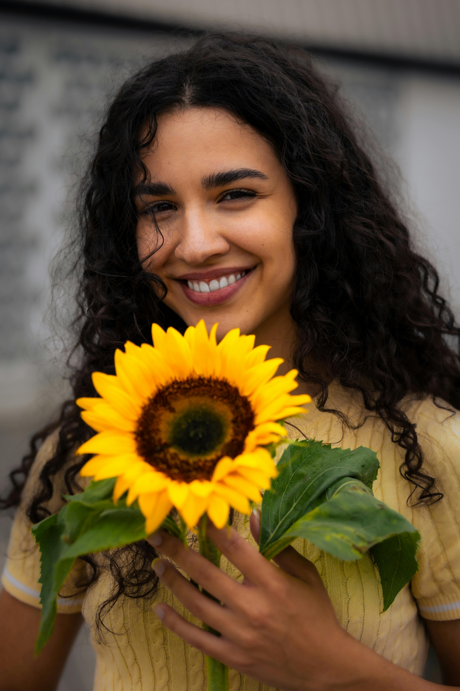
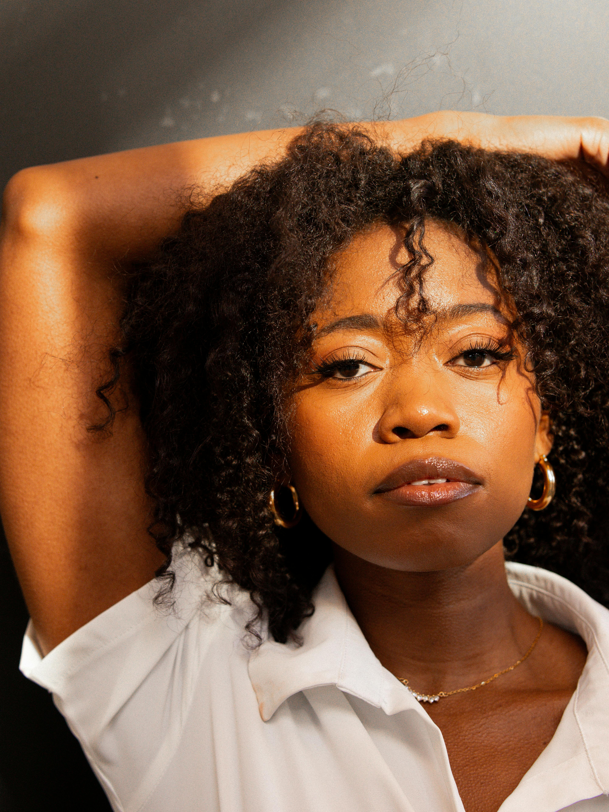
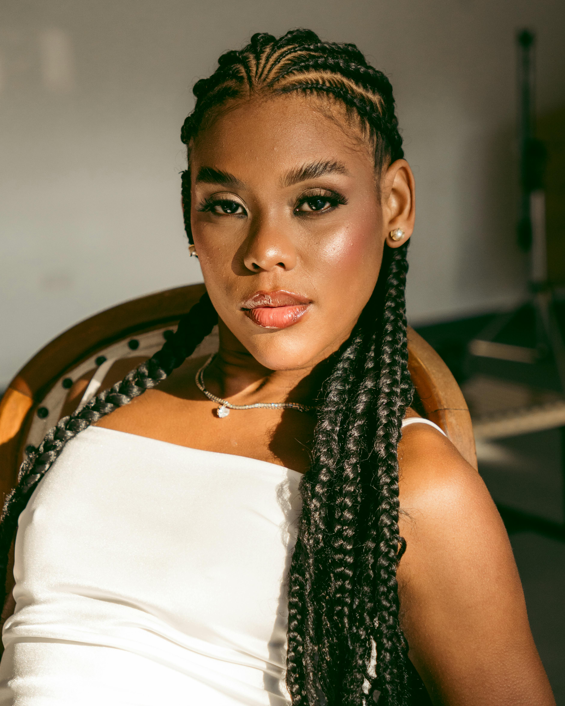
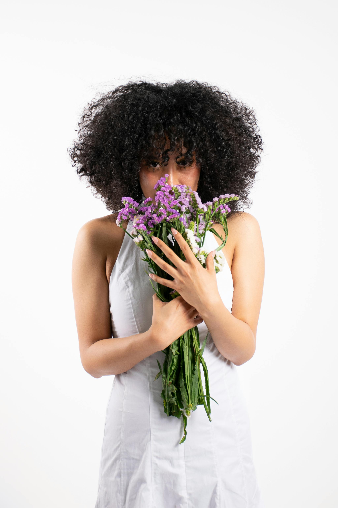
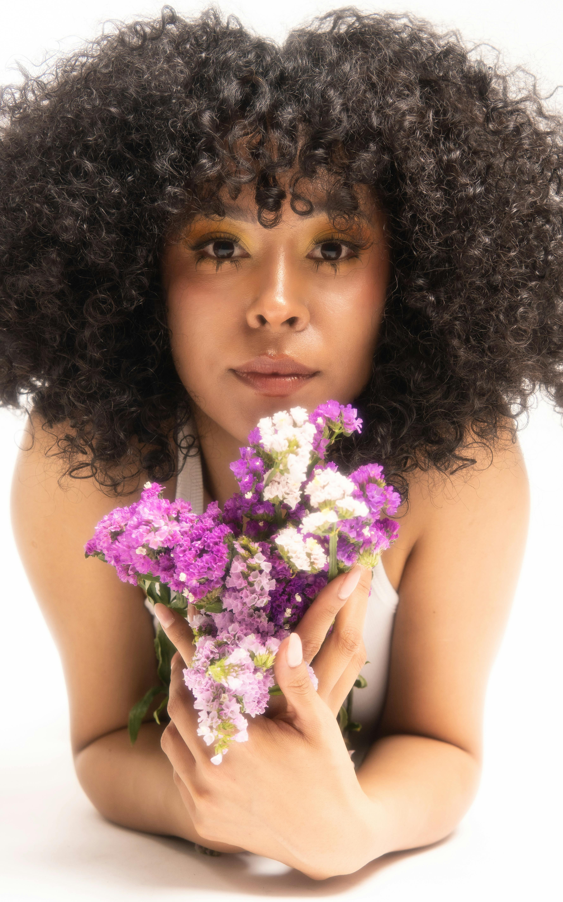

O Conceito
Este ensaio fotográfico tem como objetivo celebrar a magnitude, a diversidade e a essência da mulher negra. Utilizando elementos da natureza — especificamente texturas florais e folhagens — buscamos criar um contraste poético entre a força da melanina e a delicadeza das pétalas.
A direção criativa foca em três pilares fundamentais: Alegria & Carisma (sorrisos abertos, girassóis, luz vibrante), Sensualidade & Mistério (olhares profundos, sombras projetadas, pele iluminada) e a Conexão Eterna com a terra (tons terrosos, texturas naturais).
Direção Visual & Moodboard

Alegria Pura
Luzes abertas, carisma contagiante e o frescor dos girassóis.

Sensualidade Poética
Pele dourada, poses orgânicas e olhares magnéticos.

Poder & Presença
O empoderamento através do enquadramento clássico e iluminação dura.

Simbiose
A mulher como extensão da flor, a flor como extensão da mulher.

Vibrância
Maquiagem artística contrastando com os tons florais.
A Atmosfera
A fotografia fará uso abundante de luz natural, buscando a famosa "Golden Hour" (hora dourada) para realçar os tons quentes da pele negra e criar volumes deslumbrantes no cabelo crespo e cacheado.
Paleta de Cores
Elementos Chave
- Flores em escala macro (Girassóis, Antúrios Brancos, Estátices).
- Maquiagem que varia do natural iluminado (pele glow) a pontos de cor nos olhos.
- Figurino minimalista (tons brancos, crus e linhos) para não competir com a beleza natural.